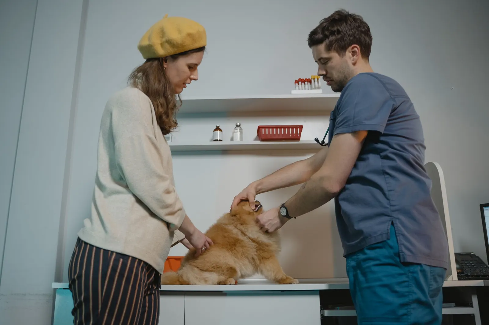
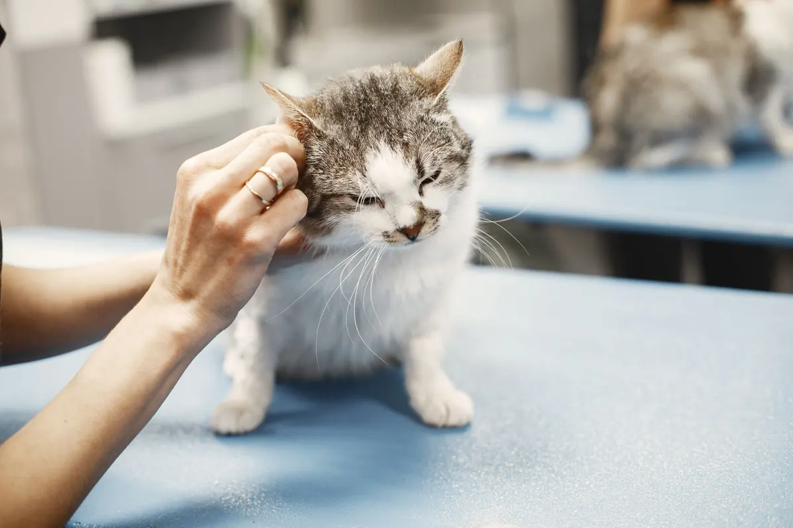
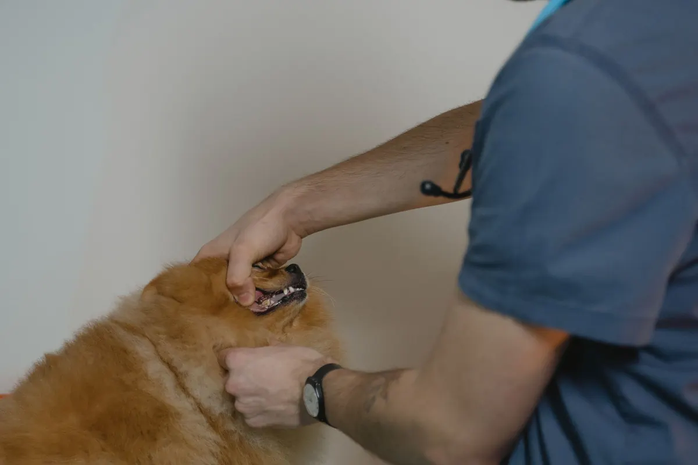
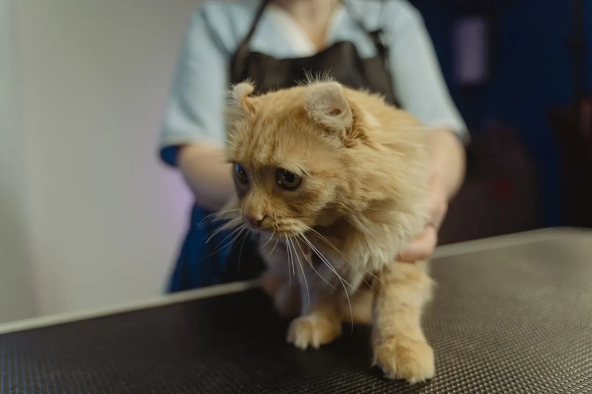

Kedi · köpek · egzotik · aşı takibi
Aşı günü geldiğinde
biz haber veririz.
Muayene, aşı, kısırlaştırma ve bakım. Dostunuzun aşı kartı sistemde; zamanı gelince WhatsApp'tan hatırlatma gider.
Veteriner kliniği · Kepez / Antalya
Hizmetler ve fiyatlar
Fiyatlar temsilîdir.
- 01Muayene700 TLtemsilî
Genel klinik muayene.
- 02Karma aşı900 TL'dentemsilî
Kedi ve köpek karma aşıları.
- 03Kuduz aşısı650 TLtemsilî
Yıllık, pasaporta işlenir.
- 04Kısırlaştırma4.500 TL'dentemsilî
Kedi / köpek, ön muayene dahil.
- 05Kan tahlili1.300 TLtemsilî
Hemogram ve biyokimya.
- 06Tıraş ve banyo1.100 TL'dentemsilî
Irka göre.
Fiyatlar örnek işletmeye aittir.



Hakkımızda
Klinik hakkında
Kepez'de 2014'ten beri. Her hastanın aşı kartı ve kilosu dijital kayıtta.
Aşı, iç-dış parazit ve kontrol zamanı gelince sahibine hatırlatma gider.
Ekip (örnek)
- Vet. Hekim Aylin T.klinik ve cerrahi
- Vet. Hekim Onur B.iç hastalıklar
- Tubaveteriner teknikeri
- Geceacil hat
Sık sorulanlar
Merak edilenler
Aşı takvimini nasıl takip ederim?
Biz takip ederiz; zamanı gelince WhatsApp'tan hatırlatma gelir.
Acil durumda ne yapmalıyım?
7/24 acil hattı arayın; nöbetçi hekim yönlendirir.
Kısırlaştırma öncesi aç kalmalı mı?
Evet, 8–12 saat açlık gerekir; ayrıntıyı randevuda veririz.
İletişim
Bize ulaşın
- AdresVarsak Karşıyaka Mah. · Kepez / Antalya (örnek adres)
- SaatlerPzt–Cmt 09:00–20:00 · acil hat 7/24
- Telefon0242 ••• •• •• (örnek)
- WhatsAppasistanı deneyin ↓